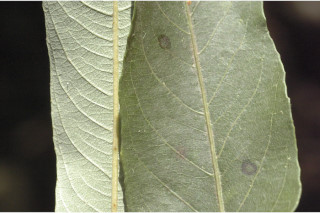
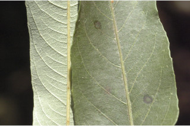

Trees up to 5 m tall.
5 ಮೀ. ಎತ್ತರದವರೆಗೆ ಬೆಳೆಯುವ ಮರಗಳು.
5 മീറ്റര് വരെ ഉയരമുള്ള മരങ്ങള്
மரங்கள் 5 மீ. வரை வளரக்கூடியது
Bark brownish, flaky; blaze light yellow.
ತೊಗಟೆ ಕಂದು ಬಣ್ಣದಲ್ಲಿದ್ದು ಚಕ್ಕೆ ರೂಪದಲ್ಲಿರುತ್ತದೆ;ಕಚ್ಚು ಮಾಡಿದ ಜಾಗ ಹಳದಿ ಬಣ್ಣದ್ದಾಗಿರುತ್ತದೆ.
ഇളകിഅടര്ന്നു പോകുന്ന, തവിട്ട് നിറത്തിലുളള പുറംതൊലി; വെട്ട്പാടിന് ഇളം മഞ്ഞനിറം.
மரத்தின் பட்டை ப்ரவுன் நிறமானது, சிறு செதில்களாக உதிரக்கூடியவை; உள்பட்டை வெளிறிய மஞ்சள் நிறமானது.
Branchlets terete, pubescent when young.
ಕಿರುಕೊಂಬೆಗಳು ದುಂಡಾಗಿದ್ದು ಎಳೆಯದಾಗಿದ್ದಾಗ ಮೃದುತುಪ್ಪಳದಿಂದ ಕೂಡಿರುತ್ತವೆ.
ഇളതായിരിക്കുമ്പോള് നനുത്ത രോമിലമായ, ഉരുണ്ട ഉപശാഖകള്.
சிறிய நுனிக்கிளைகள் குறுக்குவெட்டுத் தோற்றத்தில் வளையமானது, இளம் குறுத்தில் உரோமங்களுடையது.
Leaves simple, alternate, spiral; stipules in pairs, caducous and leaving scar; petiole to 1 cm; lamina to 16.5 × 2 cm, linear-lanceolate, apex acute, base cuneate, margin entire, subcoriaceous, glandular scales beneath; midrib raised above; secondary_nerves 15-19 pairs; tertiary_nerves reticulate.
ಎಲೆಗಳು ಸರಳವಾಗಿದ್ದುಪರ್ಯಾಯ ಮತ್ತು ಸುತ್ತು ಜೋಡನಾ ವ್ಯವಸ್ಥೆಯಲ್ಲಿರುತ್ತವೆ. ಕಾವಿನೆಲೆಗಳು ಜೋಡಿಗಳಾಗಿ ಇರುತ್ತವೆ ಮತ್ತು ಉದುರಿಹೋದ ನಂತರ ಗುರುತುಗಳನ್ನು ಉಳಿಸುತ್ತವೆ; ತೊಟ್ಟುಗಳು 1ಸೆಂ.ಮೀ.ವರೆಗಿನ ಉದ್ದವಿರುತ್ತವೆ; ಪತ್ರಗಳು 16.5 X 2 ಸೆಂ. ಮೀ. ವರೆಗಿನ ಗಾತ್ರ ಹೊಂದಿರುತ್ತವೆ ಮತ್ತು ರೇಖಾತ್ಮಕ – ಭರ್ಜಿಯ ಆಕಾರ, ಚೂಪಾದ ತುದಿ, ಬೆಣೆಯಾಕಾರದ ಬುಡ ಹೊಂದಿರುತ್ತವೆ;ಅಂಚು ನಯವಾಗಿರುತ್ತದೆ;ಪತ್ರದ ಮೇಲ್ಮೈ ತೊಗಲ್ಲನ್ನೋಲುವ ಮಾದರಿಯಲ್ಲಿದ್ದು ಪತ್ರದ ತಳಭಾಗ ರಸಗ್ರಂಥಿ ಸಮೇತವಿರುವ ಶಲ್ಕೆಗಳಿಂದ ಕೂಡಿರುತ್ತವೆ;ಮಧ್ಯನಾಳ ಪತ್ರದ ಮೇಲ್ಭಾಗದಲ್ಲಿ ಉಬ್ಬಿರುತ್ತದೆ;ಎರಡನೇ ದರ್ಜೆಯ ನಾಳಗಳು 15-19 ಜೋಡಿಗಳಿರುತ್ತವೆ;ಮೂರನೇ ದ್ರಜೆಯ ನಾಳಗಳು ಜಾಲಬಂಧ ನಾಳ ವಿನ್ಯಾಸದವು.
ലഘുവായ ഇലകള്, ഏകാന്തരക്രമത്തില് സര്പ്പിളമായി അടുക്കിയ വിധത്തിലാണ്; അടയാളങ്ങളവശേഷിപ്പിച്ചുകൊണ്ട് നേരത്തേ ഇളകിപോകുന്ന അനുപര്ണ്ണങ്ങള് ജോഡികളായുണ്ടാകുന്നു; ഇലഞെട്ടിന് 1 സെ.മീ വരെ നീളം; പത്രഫലകത്തിന് 16.5 സെ.മീ നീളവും 2 സെ.മീ വീതിയും, രേഖീയ-കുന്താകൃതിയുമാണ്, പത്രാഗ്രം നിശിതമാണ്, പത്രാധാരം ആപ്പാകാരത്തിലും, അരികുകള് അവിഭജിതമാണ്, ഉപചര്മ്മില പ്രകൃതം കീഴ്ഭാഗം ഗ്രന്ഥി-ശല്ക്കങ്ങള് നിറഞ്ഞതാണ്; മുഖ്യസിരമുകളില് ഉയര്ന്നതാണ്; 15 മുതല് 19 വരെ ജോഡി ദ്വിതീയ ഞരമ്പുകള്; ജാലിതമായ ത്രിതീയ ഞരമ്പുകള്.
இலைகள் தனித்தவை, மாற்றுஅடுக்கமானவை, சுழல் போல் அமைந்தது; இலையடிச்செதில் ஒர் ஜோடி, எளிதில் உதிரக்கூடியவை மற்றும் தழும்புகளை ஏற்படுத்த கூடியது; இலைக்காம்பு 1 செ.மீ. நீளமானது; இலை அலகு 16.5X2 செ.மீ., கோட்டு-ஈட்டி வடிவானது, அலகின் நுனி கூரியது, அலகின் தளம் ஆப்பு வடிவானது, அலகின் விளிம்பு முழுமையானது, சப்கோரியேசியஸ், சுரப்பிகளுடைய செதில்கள் அலகின் பின்புறத்தில் கொண்டது; மையநரம்பு மேற்புறத்தில் அலகின் பரப்பைவிட உயர்ந்து இருக்கும்; இரண்டாம் நிலை நரம்புகள் 15-19 ஜோடிகள்; மூன்றாம் நிலை நரம்புகள் வலைப்பின்னல் போன்றது.
Inflorescence in axillary spikes; flowers reddish, unisexual, dioecious.
ಪುಷ್ಪಮಂಜರಿ ಕದಿರು ಮಂಜರಿ ಮಾದರಿಯಲ್ಲಿದ್ದು ಅಕ್ಷಾಕಂಕುಳಿನಲ್ಲಿ ಇರುತ್ತವೆ; ಹೂಗಳು ಕೆಂಪಾಗಿರುತ್ತವೆ ಮತ್ತು ಏಕಲಿಂಗಿಗಳಾಗಿದ್ದು ಗಂಡು ಮತ್ತು ಹೆಣ್ಣು ಹೂಗಳು ಪ್ರತ್ಯೇಕ ಸಸ್ಯಗಳಲ್ಲಿ ಇರುತ್ತವೆ.
ചുവപ്പുനിറത്തിലുളള ഏകലിംഗികളായ പൂക്കള് കക്ഷീയ സൈ്പക്കുകളിലുണ്ടാകുന്നു, ഡയീഷ്യസാണ്.
மஞ்சரி இலைக்கோணங்களில் காணப்படும் ஸ்பைக்ஸ்; மலர்கள் சிவப்பு நிறமானவை, ஓர்பாலானவை, ஈரகம் கொண்டவை.
Capsule, 3-2 valved cocci; seeds 3, ovoid.
ಸಂಪುಟ ಫಲದಲ್ಲಿ ಮೂರು 2 ಕೋಶವುಳ್ಳ ಮರಿಫಲಗಳು; ಬೀಜಗಳು 3 ಇದ್ದು ಅಂಡಾಕಾರದವುಗಳಾಗಿರುತ್ತವೆ.
3 വീതം അണ്ഡാകാര വിത്തുകളുളള കായ മൂന്ന് 2 വാല്വുകളുളള അറയുളള കാപ്സ്യൂള് ആണ്.
வெடிகனி (கேப்சூல்), 3-2 அறைகளுடைய காக்கை; விதைகள் 3, முட்டை வடிவானது.


 
